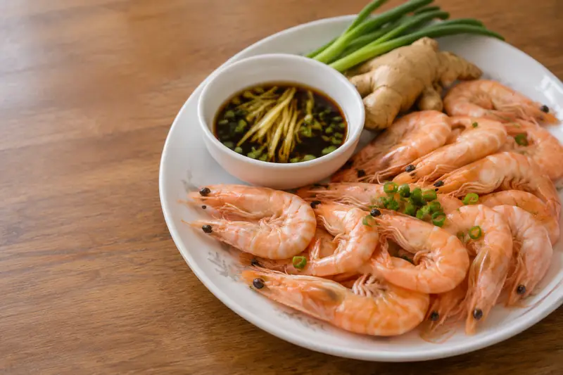

Seafood海鲜
Frozen raw shrimp冷冻生虾
At Costco在 Costco
Typical pack常见规格: Kirkland Signature frozen tail-on raw shrimp; raw shrimp 1.82 kgKirkland 冷冻带尾生虾；生虾 1.82 公斤
Price varies; check the warehouse or costco.ca.价格随时变化，请看仓库或 costco.ca。
Sample date取样日期 2026-11-16. Availability varies by warehouse and season; this is not a stock guarantee.有无因门店和季节而异，不是库存保证。
Store and portion储存与分装
Eat fresh fish and shrimp the day you buy or the next; frozen fish keeps 3-6 months, shrimp 6. Thaw in the fridge, not in hot water.鲜鱼虾买回当天或次日吃完；冷冻鱼 3–6 个月，虾 6 个月。在冷藏里解冻，别泡热水。
Wrap or vacuum each fillet separately; bag shrimp by the meal so you never thaw the whole pack.每块鱼单独真空或包好再冷冻；虾按一餐的量分袋，用时不用整包解冻。
Per 100 g (Canadian Nutrient File)每 100 克（加拿大营养素数据库）
Crustaceans, shrimp, mixed species, raw · code 3211
71 kcal · protein蛋白 13.61 g · fat脂肪 1.01 g · carbs碳水 0.91 g · fibre纤维 0 g · sodium钠 566 mg
Crustaceans甲壳类
Recipes with this用到它的菜

Cantonese Poached Shrimp with Ginger-Soy Dip白灼虾15 min分钟 · 2 servings份 · Cantonese粤Shandong Braised Prawns油焖大虾17 min分钟 · 2 servings份 · Shandong鲁 Steamed Garlic Butterflied Shrimp蒜蓉开背虾38 min分钟 · 2 servings份 · Cantonese粤
Steamed Garlic Butterflied Shrimp蒜蓉开背虾38 min分钟 · 2 servings份 · Cantonese粤 Three-Treasure Dumplings三鲜水饺80 min分钟 · 4 servings份 · Shandong鲁Longjing Tea Shrimp龙井虾仁35 min分钟 · 2 servings份 · Jiangnan江浙
Three-Treasure Dumplings三鲜水饺80 min分钟 · 4 servings份 · Shandong鲁Longjing Tea Shrimp龙井虾仁35 min分钟 · 2 servings份 · Jiangnan江浙 Cantonese Shrimp and Silky Eggs滑蛋虾仁21 min分钟 · 2 servings份 · Cantonese粤
Cantonese Shrimp and Silky Eggs滑蛋虾仁21 min分钟 · 2 servings份 · Cantonese粤 Shrimp Scampi Pasta蒜香黄油虾意面25 min分钟 · 3 servings份 · Italian意
Shrimp Scampi Pasta蒜香黄油虾意面25 min分钟 · 3 servings份 · Italian意 Shrimp Wonton Soup鲜虾云吞汤40 min分钟 · 4 servings份 · Cantonese粤Steamed Egg with Shrimp虾仁蒸水蛋27 min分钟 · 2 servings份 · Cantonese粤Seafood Soft Tofu Stew海鲜嫩豆腐汤35 min分钟 · 3 servings份 · Korean韩
Shrimp Wonton Soup鲜虾云吞汤40 min分钟 · 4 servings份 · Cantonese粤Steamed Egg with Shrimp虾仁蒸水蛋27 min分钟 · 2 servings份 · Cantonese粤Seafood Soft Tofu Stew海鲜嫩豆腐汤35 min分钟 · 3 servings份 · Korean韩 Winter Melon and Shrimp Soup冬瓜虾仁汤40 min分钟 · 4 servings份 · Chinese home-style家常
Winter Melon and Shrimp Soup冬瓜虾仁汤40 min分钟 · 4 servings份 · Chinese home-style家常 Yangzhou Fried Rice扬州炒饭20 min分钟 · 3 servings份 · Jiangnan江浙Shanghai Crispy Shrimp油爆虾37 min分钟 · 2 servings份 · Jiangnan江浙Shandong Braised Prawns油焖大虾22 min分钟 · 3 servings份 · Shandong鲁
Yangzhou Fried Rice扬州炒饭20 min分钟 · 3 servings份 · Jiangnan江浙Shanghai Crispy Shrimp油爆虾37 min分钟 · 2 servings份 · Jiangnan江浙Shandong Braised Prawns油焖大虾22 min分钟 · 3 servings份 · Shandong鲁